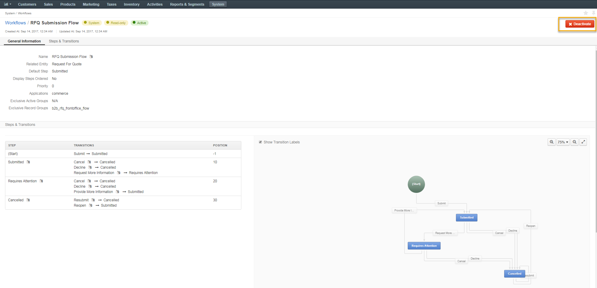
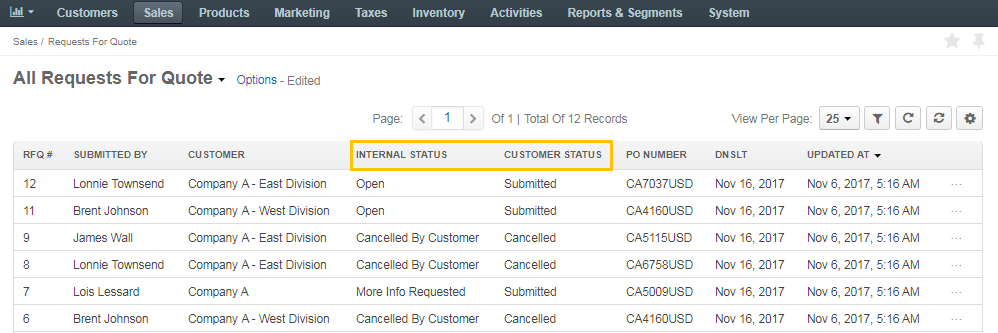
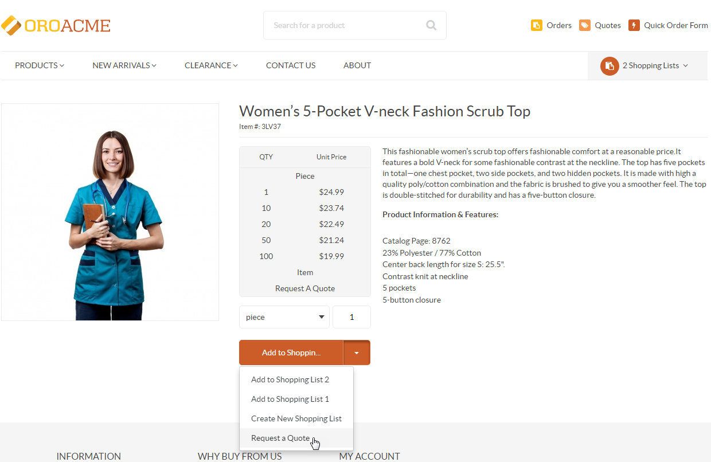
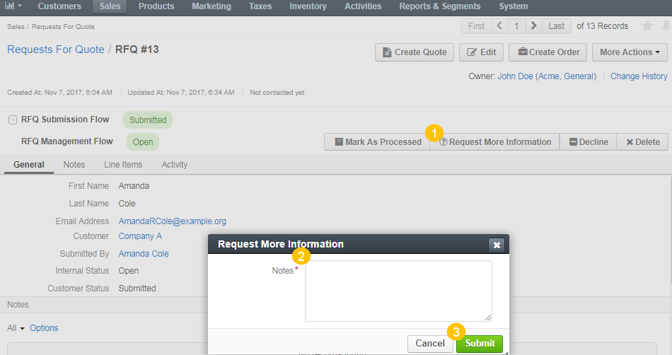
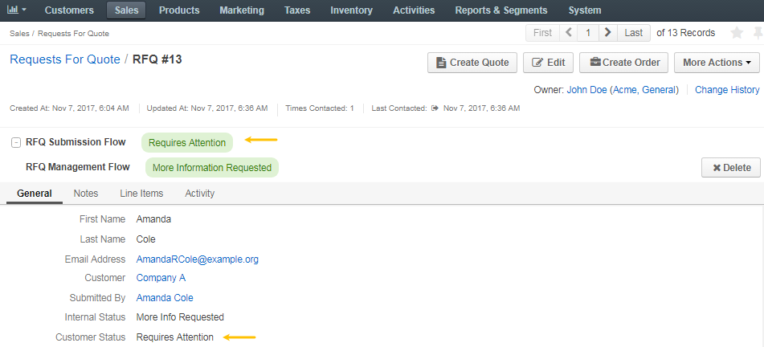
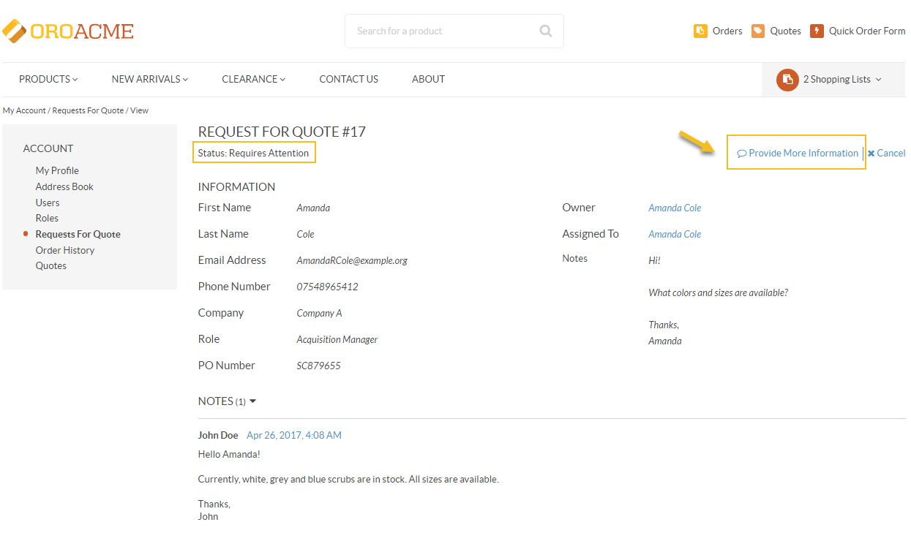
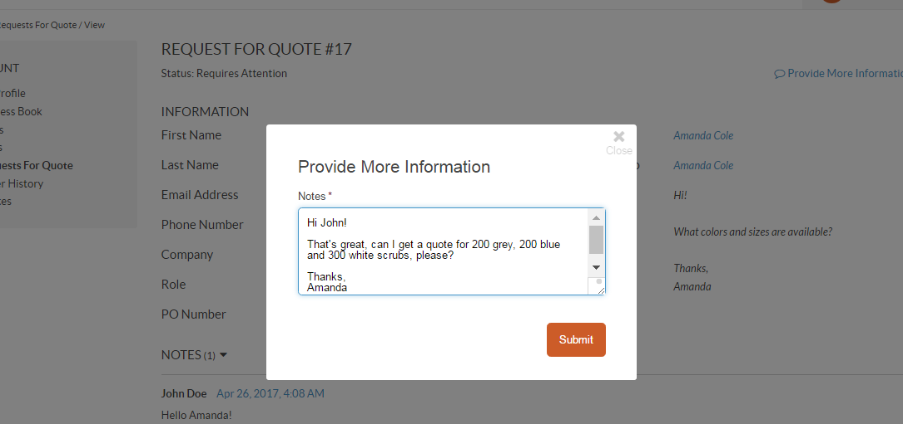
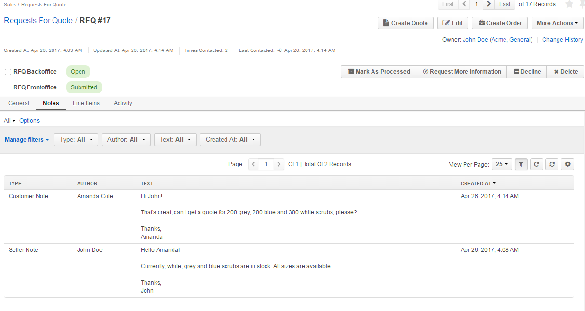
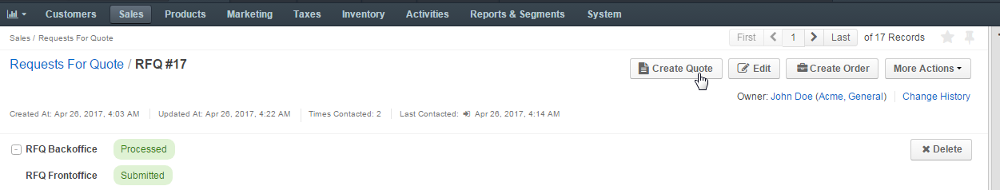

RFQ Submission Flow Workflow¶
Overview¶
RFQ (Request For Quote) Submission Flow Workflow is a system workflow that defines the sequence of steps and transitions that an RFQ can go through in the storefront and the management console.
To reach the workflow:
- Navigate to System > Workflows in the main menu.
- Click RFQ Submission Flow to open the flow.
On the RFQ Submission Flow page, you can disable the workflow by clicking Deactivate the workflow.
Within the Workflows list, you can perform the following actions for the RFQ Submission Flow workflow:
- View the workflow:
- Deactivate the workflow:
RFQ Customer Statuses¶
RFQ Management Flow and Submission Flow workflows are interconnected. When both workflows are active, the following statuses are available:
Customer Statuses (correspond to RFQ Submission Flow on the RFQ page) are the statuses displayed to customers in the storefront. In the management console, they are visible on the RFQ page:
- Submitted
- Pending Approval
- Requires Attention
- Cancelled
- Internal Statuses (correspond to RFQ Management Flow) are described in RFQ Management Flow workflow.
Note
Neither customer nor internal statuses can be edited or deleted.
Statuses are also displayed in the RFQ list:
The following table describes which options are available for each of the statuses, and how the corresponding transitions change them.
| Step | Current Internal Status | Current Customer Status |
|---|---|---|
| An RFQ is submitted by a customer | Open | Submitted |
| The RFQ is marked as processed by sales representative. The customer is not authorized to view this status | Processed | Submitted |
| Sales representative requests more information from the customer | More Information Requested | Requires Attention |
| The customer responds to the request and provides the additional information | Open | Submitted |
| The RFQ is declined | Declined | Cancelled |
| The RFQ is deleted and no further actions are possible unless it is reopened | Deleted | The RFQ is removed from the customer user’s page |
Note
You can add and remove columns in the workflows list by clicking on the far right of the list.

Steps and Transitions¶
The RFQ Submission Flow consists of the following steps and transitions:
- Steps:
- Submitted
- Requires Attention
- Cancelled
- Transitions:
- For Submitted: Cancel, Decline, Request More Information
- For Requires Attention: Cancel, Decline, Provide More Information
- For Cancelled: Resubmit, Reopen
Note
Please note that the Request For Information, Reopen and Decline transitions are visible only in the management console for the sales personnel.
As an illustration, let us go through a sample flow to see RFQ Submission Flow in action:
A customer user creates an RFQ in the storefront. Once the RFQ is sent, its customer status is marked as Submitted.
In the management console, a sales representative sees the RFQ and requests more information. The RFQ is now in the Requires Attention customer status.
 The customer user receives the request in the storefront, clicks Provide Information in the right corner of the page and replies to the message. The customer status is now Submitted.
 The sales representative reads the reply in the Notes section of the RFQ page, marks the RFQ processed and creates a quote from the same page. The RFQ is now in the Processed customer status.
 